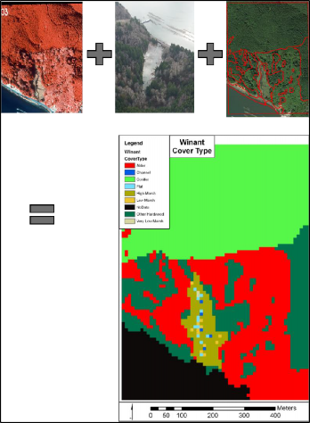
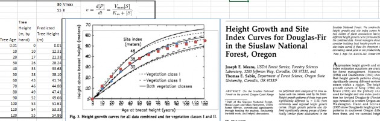
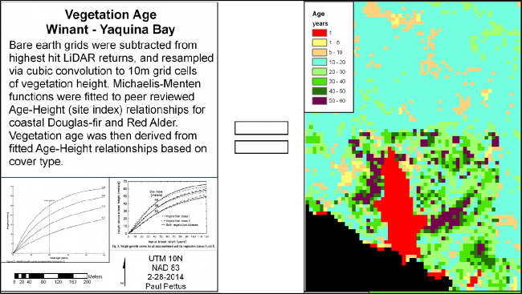

+
D.1 | Acquisition & Generation of VELMA Input Data
Overview (Tutorial D.1 - Basic Acquisition and Generation of VELMA Input Data)
This tutorial describes the minimum data input files required to run the VELMA simulator, where to acquire them, and steps to prepare them for a VELMA simulation.
The following data files must be complete and available for the VELMA Simulator to run:
| FILE | TYPE | CONTAINS |
| Flat-Processed DEM | Spatial / Grid ASCII (.asc) | Elevation in meters |
| Cover Species ID Map | Spatial / Grid ASCII (.asc) | Cover Species ID integers |
| Cover Species Age Map | Spatial / Grid ASCII (.asc) | Cover Species age in years |
| Soil Parameters ID Map | Spatial / Grid ASCII (.asc) | Soil Parameterization IDp integers |
| Precipitation Driver Data | Temporal / (.csv or .txt) | Precipitation per in mm |
| Air Temperature Driver Data | Temporal / (.csv or .txt) | Air Temperature in degrees C |
Digital Elevation Model and Soils
Elevation and other common GIS data can be retrieved from many local, state, and federal GIS repository libraries. The USDA's "Geospatial Data Gateway" provides easy access to multi resolution USGS National elevation data along with many other types of natural resource data. Higher resolution data, like LiDAR can many times be found from alternative public and private stakeholders such as the "Puget Sound Lidar Consortium". Other popular data, such as STATSGO and newer 10m gridded
SSURGO soils GIS layers can also be acquired from the "Geospatial Data Gateway".
References
Weather Data
Daily meteorological summaries driver data can most easily be acquired from both observational and modeled sources such as:
Care needs to be taken with all weather data drivers to ensure completeness of temporal coverage and
accuracy of values. Consistently, observational data will have "not available" (NA's) or gaps in coverage,
false readings from equipment malfunction, and user input errors. Modeled data tends to bring with it other types of errors or consistency gaps, which will need to be accounted for. For instance, DAYMET estimates are updated yearly, currently only available for 1980 - 2017, and uniformly truncate leap years to 365 days, where the VELMA model accounts for leap days. Benhnke et al. 2016 highlight the general comparison of observational versus modeled errors, as well as the regional variations of the various popular downscale gridded meteorological data. Appended tools and alternative weather models were created to deal with these and other inconsistencies in daily diver data.
References
Behnke, R., Vavrus, S., Allstadt, A., Albright, T., Thogmartin, W. E., & Radeloff, V. C. (2016). Evaluation of downscaled, gridded climate data for the conterminous United States. Ecological Applications.
PRISM Climate Group, Oregon State University, http://prism.oregonstate.edu
Cover Species and Land Cover
Species and land cover data can be either custom generated or retrieved from data libraries. There are several national and regional scale land cover and species type data sets to be chosen from. The popular remotely sensed National Land Cover Data for the years 2006 and 2011 can be acquired from either the "Multi-Resolution Land Characteristics consortium" or "Geospatial Data Gateway". The Gap Analysis Program (GAP) has create a national scale vegetation inventory, which was also combined with LANDFIRE, another national GIS data set, to help with both ecosystem management and fire resource management. For Pacific coast states, gradient analysis and nearest neighbor imputation (GNN) techniques were used to create more accurate forested species cover maps. Since cover species is site specific, general reductions can be made from national data sets to meet the user's needs.
References
Gergely, K.J., and McKerrow, A., 2016, Terrestrial ecosystems—National inventory of vegetation and land use (ver. 1.1, August 2016): U.S. Geological Survey Fact Sheet 2013-3085, 1 p., https://pubs.usgs.gov/fs/2013/3085/.
Homer, C.G., Dewitz, J.A., Yang, L., Jin, S., Danielson, P., Xian, G., Coulston, J., Herold, N.D., Wickham, J.D., and Megown, K., 2015, Completion of the 2011 National Land Cover Database for the conterminous United States-Representing a decade of land cover change information. Photogrammetric Engineering and Remote Sensing, v. 81, no. 5, p. 345-354
LANDFIRE, LANDFIRE: Existing Vegetation Type, U.S. Department of Agriculture and U.S. Department of the Interior.
Ohmann, Janet L.; Gregory, Matthew J. 2002. Predictive mapping of forest composition and structure with direct gradient analysis and nearest neighbor imputation in coastal Oregon, U.S.A. Canadian Journal of Forest Research. 32: 725-741
Cover Species Age
In some instances, stand ages maps might exist, but generally cover species age maps are custom made for each VELMA area of interest (AOI) model run. Age maps may be developed from remotely sensed data, surveys, land ownership maps, expert knowledge, or some combination of these methods. Below is an example of a custom species age creation process.
The Winant AOI, is a small tidally influence watershed that drains into the Yaquina bay along the Oregon coast. Modeling efforts are being made to quantify and qualify how nutrients are transport and cycled through a salt marsh whose headwaters are drainages of typical coastal conifer species and high nitrogen fixing hardwoods. It was there for necessary to model both types of unique biogeochemistry of the contributing Alder and Conifer forests, and their ages.
Cover species maps were developed for the Winant AOI from a combination of ortho-imagery, aerial imagery, and on-site ground surveys (Figure 1).
Figure 1. From Top left to right to bottom, ortho-imagery, aerial imagery, and site survey were combined to create cover type raster maps.
To generate species specific age maps, Michaelis-Menten curves we developed using literature data to produce functions that related species specific age to height. LiDAR height values were used to run the fitted curves of a particular species and derive its appropriate age cell value (Figure 2 and 3). Similar techniques can be used to develop relationships between above ground biomass or above ground carbon and vegetation age. Woods Hole has produced a national data set which include estimates of above ground carbon and vegetation height (Kellndorfer et al, 2012).
Figure 2. Height to age index curve calculation for Douglas-Fir.
Figure 3. Site index and curve fitted relationships species age and tree height.
References
Kellndorfer, J., Walker, W., LaPoint, E., Bishop, J., Cormier, T., Fiske, G., Hoppus, M., Kirsch, K., and Westfall, J. 2012. NACP Aboveground Biomass and Carbon Baseline Data (NBCD 2000), U.S.A., 2000. Data set. Available on-line [http://daac.ornl.gov] from ORNL DAAC, Oak Ridge, Tennessee, U.S.A. http://dx.doi.org/10.3334/ORNLDAAC/1081